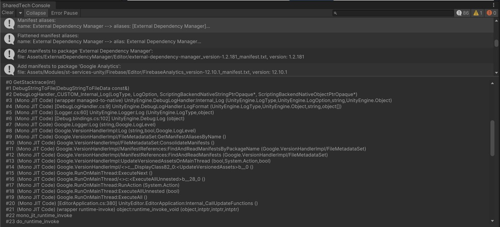
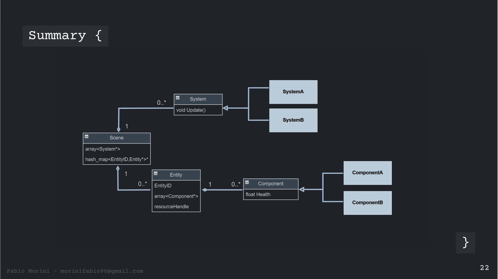

I’m a Unity software engineer working on live mobile games and shared tech.
I currently work at DECA Games where I do the maintenance of Unity titles through new gameplay content,
services integration, and more recently Shared Tech. My work in Shared Tech includes designing and implementing
shared modules which are added to the games.
I’ve been passionate about games since I was a kid. The first games I got my hands on were LEGO
sets and the PlayStation 1. Over the years, I wasn’t only enjoying games as a playable experience,
but I was also curious about how they worked on the inside. That intrigue turned into taking things
apart, reverse-engineering devices, and learning how the pieces fit together. For me, being able to
understand or fix a system is as satisfying as playing a game. Outside of game development,
I’m an avid chess player and I also enjoy ’90s movies.
Education: Interactive Digital Contents Degree (ENTI - Universitat de Barcelona).
Role: JS Developer using Phaser. I coded the enemy & boss patterns and main gameplay systems
Team: 2 programmers, 1 Scrum Master.
Experiments
Custom Console Logger
DECA GAMESTOOLUnityEditor UX

Description: Unity console logger developed for DECA Shared Tech, it features a UI made from scratch, channels Unity and Logcat logs in one place and displays the console on the build.
Community
User Research Playtester @ Ubisoft
UBISOFTQAUser Research
Description: Assassin’s Creed Nexus VR early build playtest. The sessions focused on comfort and gameplay feel in early builds of the game.
Guest Speaker @ Barcelona C++ Meetup
C++TalkECS

Description: Guest speaker at the Barcelona C++ Meetup. Presented an introduction to ECS as a data-oriented alternative to OOP in game development.